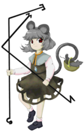

Título: Touhou Seirensen ~ Undefined Fantastic Object
Desenvolvedora: Team Shanghai Alice
Criador: ZUN
Data de lançamento: 15 de agosto de 2009
Plataforma: PC (Windows)
Gênero: Shoot 'em up (danmaku / bullet hell)
Descrição:
Touhou 12 é o décimo segundo jogo principal da série Touhou.
A história gira em torno de objetos voadores misteriosos que começam
a aparecer pelos céus de Gensokyo.
Ao coletá-los, descobre-se que eles são fragmentos ligados a um navio
lendário selado há muito tempo.
Estranhos objetos semelhantes a discos voadores começam a surgir nos céus de Gensokyo. Esses objetos liberam energia e parecem reagir quando coletados.
Reimu Hakurei, Marisa Kirisame e Sanae Kochiya partem para investigar o fenômeno, acreditando que pode se tratar de um novo incidente envolvendo youkais ou forças desconhecidas.
Durante a jornada, elas descobrem que os objetos fazem parte do lendário Navio Tesouro Palanquim (Myouren Temple Ship), que estava selado há séculos.
A responsável pelos eventos é Byakuren Hijiri, uma poderosa monja youkai que havia sido selada no Makai por humanos que temiam seu poder.
Seus seguidores — incluindo Murasa Minamitsu, Ichirin Kumoi e Shou Toramaru — trabalham para libertá-la reunindo os fragmentos espalhados pelo céu.
Após a batalha final, Byakuren é libertada e estabelece o Templo Myouren em Gensokyo, promovendo a convivência pacífica entre humanos e youkais.
O jogo introduz o sistema de coleta de UFOs coloridos, que concedem bônus especiais e aumentam a pontuação, tornando a mecânica única dentro da série.
Reimu Hakurei (sacerdotisa do Santuário Hakurei)
Marisa Kirisame (maga humana)
Sanae Kochiya (sacerdotisa do Santuário Moriya)
Cada personagem possui diferentes tipos de disparo e opções, alterando o estilo de jogo e os diálogos durante a campanha.
